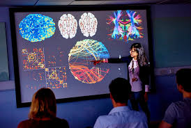
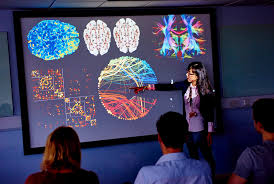

Yuxiang Liu
As a psychology advisor, I have dedicated my life to understanding the intricate workings of the human mind and guiding individuals on their journey towards self-discovery, personal growth, and emotional well-being. Through my years of education, training, and practical experience, I have come to recognize the profound impact that psychology can have on individuals, families, and communities.
I firmly believe in the power of the therapeutic relationship, where trust, empathy, and collaboration form the bedrock for transformative change. In my sessions, I create a safe and non-judgmental space where individuals can freely explore their thoughts, emotions, and experiences. Through active listening, insightful questioning, and skillful interventions, I aim to facilitate self-reflection, foster self-awareness, and empower individuals to make positive changes in their lives. The human mind is a fascinating and complex entity, capable of incredible feats of intellect, creativity, and resilience. Yet, it is also susceptible to various challenges and struggles that can hinder one's ability to live a fulfilling and meaningful life. This is where the field of psychology steps in, offering a wealth of knowledge and therapeutic techniques to help individuals overcome obstacles, heal emotional wounds, and unlock their true potential.
As a psychology advisor, my role is to provide guidance, support, and evidence-based strategies to individuals seeking assistance in navigating the complexities of their inner world. Whether it's coping with stress, managing relationships, overcoming trauma, or striving for personal growth, I am here to lend a compassionate ear and a wealth of expertise to help individuals uncover their own unique paths to well-being.
My approach to psychology is integrative, drawing upon a range of theoretical orientations and evidence-based interventions. I recognize that each individual is unique, and therefore, a tailored approach is necessary to address their specific needs and goals. I may incorporate elements of cognitive-behavioral therapy (CBT), psychodynamic approaches, mindfulness techniques, and positive psychology, among others, to develop a holistic and personalized treatment plan.
In addition to working with individuals, I am also passionate about promoting mental health awareness, destigmatizing psychological struggles, and advocating for the importance of self-care and emotional well-being. I firmly believe that mental health is a vital component of overall wellness, and I strive to contribute to a society that recognizes and prioritizes the importance of psychological well-being.
Through ongoing professional development and staying abreast of the latest research in the field, I am committed to providing the highest standard of care to my clients. Psychology is a constantly evolving discipline, and I view lifelong learning as an essential aspect of my role as an advisor. By incorporating the latest advancements in psychology into my practice, I can offer my clients the most effective and up-to-date strategies for personal growth and healing. Ultimately, my goal as a psychology advisor is to help individuals navigate their inner landscapes, cultivate self-compassion, and empower them to lead meaningful and fulfilling lives. I am honored to be a part of their journey, guiding them through challenges, celebrating their successes, and witnessing their transformation.
If you are seeking support, guidance, or simply someone to listen, I am here to accompany you on your path towards well-being. Together, we can explore the depths of the human psyche, unlock your inner strengths, and embark on a transformative journey towards a more fulfilling and emotionally rich life.
Experience
Developer
• Volunteered in high schools
• Gave psychology speech to my company
• Did research with famous psychologists
Teaching Assistant
• Ran sessions to help students learn how to code
• Reviewed and graded student coding projects
• Created educational content to help promote student education
• TA'd for over 400 students each academic quarter
Education
UC Riverside
University of California Riverside
University of California Riverside
Portfolio



